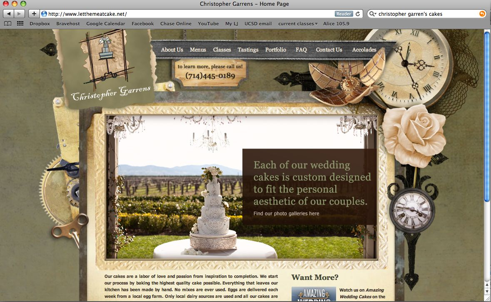
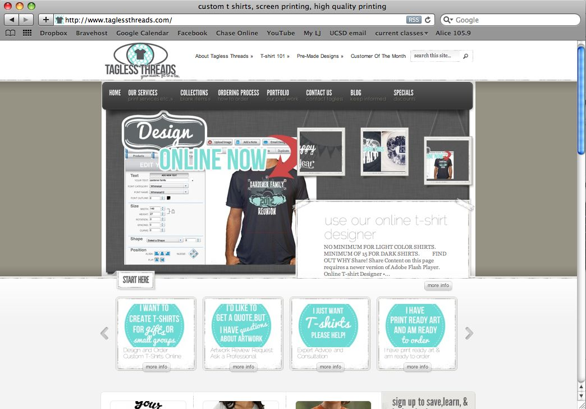
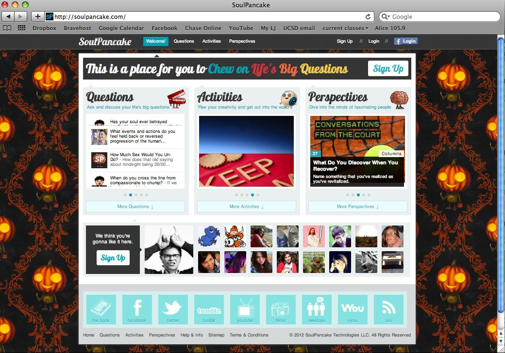
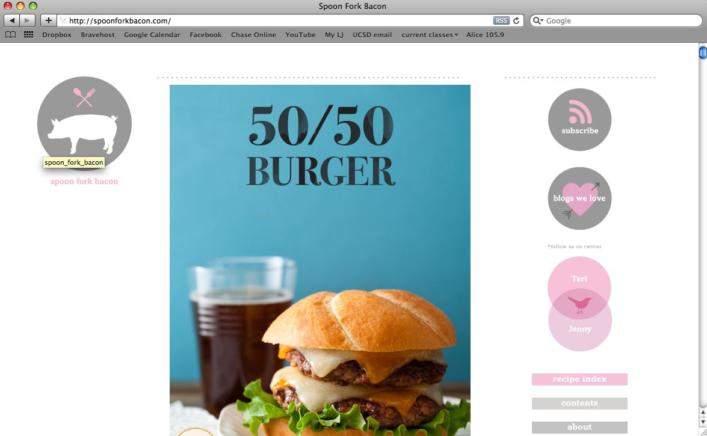

10 Portfolios, Jenny Lyons |
|||||
| Brand | Functionality | Interactivity | Navigation | ||
|
Christopher Garren's Cakes
Visited 1/16/12 Three box layout |
|
The menus allow for the content to be well-organized, so it is easy to get to what you are looking for. However, the portfolio section is lacking in secondary information such as naming and pricing. This information can be found under a second menu, so it is not as unified as it could be. It would be nicer if there was some text to accompany the various pictures on the portfolio page. | Scrolling over nav buttons cues drop-down menus. Within the portfolio page there is a slideshow that displays the work and allows you to click on thumbnails to view specific pieces. There isn't much interactivity beyond that because all of the content is pretty visible. | All of the navigation is done from a nav bar at the top. This is very typical and familiar to users, so it is not difficult to negotiate through the menus. The design of the website is consistent across the pages, making it easy to navigate and keep track of all of the pages. It is easy to detect the depth of the website form the dropdown menus, and the consistency and simplicity make it very functional. |  |
|
Tagless Threads
Visited: 1/16/12 Five Box Layout |
|
The logo and home page does a really god job of communicating what the website is trying to advertise. All of the content behind the nav links deliver as advertised, and contain a lot of content along with their pictures. I do wish that the portfolio had a little more substance to it though. | There are several slideshows throughout the site that display their work and allow you to scroll through their galleries. Both the banner and the global nav bar have drop downs that appear when scrolled over. The links change color to indicate when you are scrolling over them. The portfolio images come up in light box when clicked, but they don’t show much in addition to what is already there. | The navigation is done primarily from a nav bar that is present across all pages. Most of the pages contain a title that matches with the name on the link that you clicked to get there, so there is continuity. It is really easy to get home, and the sight isn’t very deep so it isn’t easy to get lost. |  |
|
Candy Chang
Visited 1/18/12 Headline and Gallery Layout |
|
The site holds a lot of content behind very few links. When you click on them, the pages they lead you to will leave you scrolling forever. However, the category titles speak for themselves, so there’s no confusion trying to decide where you need to go. | All of the links turn blue when you hover over them. There is a search bar in the top right to help you navigate the droves of content. | There aren’t any links or drop-downs beyond what is immediately noticeable on the home page. The nav bar caries over throughout the pages, and the page you’re currently on remains highlighted red so you are abel to tell what page you’re on. |  |
|
Matthew Tauzer
Visited 1/17/12 Featured photo layout |
|
It is apparent form the featured photo immediately that this is a photography portfolio, so the message is conveyed pretty readily, if not from the giant photograph, then it can be inferred from the words in the nav bar. The only copy in the entire site, however, is in the artist’s bio, so it would have been nice to have more explanation for the photos. | There is very little to click on the home page. This instantly sends the user to the nav bar, where links are illuminated when hovered over. On the other pages of the site there are slideshows you can pan through, either by arrows or the thumbnails on the bottom. Clicking on the images enlarges them, and you can zoom out by clicking again, or continue skimming through form the zommed view. | This site is pretty straight-forward, so it is not difficult to navigate. The current page is highlighted in the nav bar and marked by a small dot. The location in the slide show is maintained by highlighting the thumbnail. |  |
| Soul Pancake
Visited 1/16/12 Power grid layout |
|
Although it is not immediately clear what the site is about, the large headings and obscure topics invite the user to explore and get out of it what they can. The banner changes depending on what link you click to integrate the concept into the new headline. This helps give context to the content of the pages. | The page is riddled with links to click, slideshows to view, and text fields to give your own input in. The site is full of content, and very interactive. The content itself is also pointed to drive the user to interact with the site. | The gross navigation is done from the global nav bar, and the names of links are duplicated on the home page in conjunction with interesting pictures to give you an idea of what you can find. All of the content pages show you what page you’re on at the bottom, and all of the slide shows have cues to give you an idea of how many pictures. |  |
|
Airtight Interactive
www.airtightinteractive.com/ Visited 1/16/12 |
|
After following the directions, the site delivers what you ask for. It also gives other suggested options of what to search for around the content that it found for you. The ring of words is very striking, and grabs your attention. | The images you searched for can be manipulated by navigating through the gallery. When your cursor approached the ring of words in the periphery, it automatically zooms out to reveal the rest of the words. To zoom back into the search, you simply move it back inside the ring. | Navigation is done mostly through the arrows at the bottom of the gallery. It tells you at what point in the gallery you are, and how many images there are in total. There is also a search button in the bottom left corner is you want to start from the beginning, but this doesn’t grab much attention, so it is difficult to see. |  |
|
The Modern NYC
Vistited 1/16/12 Full Screen Photo Layout |
|
The attention is drawn to the full page photos of people relaxing and enjoying their time at the restaurant. Due to the name and the style, the brand is not subtle, but very straightforward with what it is representing. The content is very minimalist, but every new link you click provides new information. No matter what you click, the full-page, scrolling photos are maintained above all else. | There isn’t much to interact with. The photos cycle through regardless of where you are. The links are illuminated when you hover over them, and that’s about all the site offers. | Navigation is done from the nav bar at the side, and global nav bar, which is strangely at the bottom. This unfortunately makes the global nav bar difficult to see, but all precedence is given to the experience of watching the pictures over all else. |  |
|
Spoon Fork Bacon
Vistited 1/16/12 |
|
The large, centered images, and site name convey the message of food very readily. Most of the content can be found on the home page itself below the fold. | There is very littler interactivity, and virtually nothing beyond the nav bar. | All navigation is done either by scrolling or through the nav bar which is placed low on the right hand margin. All of the contents of the sight are on a separate page which you have to navigate to. This is another instance where the vibe of the pictures is given priority over the functionality. |  |
|
Threadless Tees
Vistited 1/16/12 |
|
The purpose of the site is conveyed readily by the content in the large slideshow that is prominent on the home page. Navigating further through the site reveals much more content, and all pages and images are given titles and brief descriptions. | The nav bar has drop-downs, and the slide shows have arrows. Most importantly, when you go to the shop page, a bunch of options appear in the left margin that allow you to constrain the products you’re looking at to aid your search. | All current pages are colored so you know your placement in the site. The nav bar is maintained across pages, and the number of content pages is displayed to show the depth of the site. |  |
|
Ambient Music Guide
Vistited 1/18/12 |
|
The overall theme of light and sound is carried across the pages. The banner and logo convey the product very readily, and are carried across pages for continuity. | There isn’t much beyond links to click. | Navigation is done form the nav bar and global nav bar. The title on each page indicates where in the site you are. To aid in searching the content, A-Z links are given so the user doesn’t have to scroll to find something. Links back to previous pages are given on each new page. |  |
Sketch

|
|||||